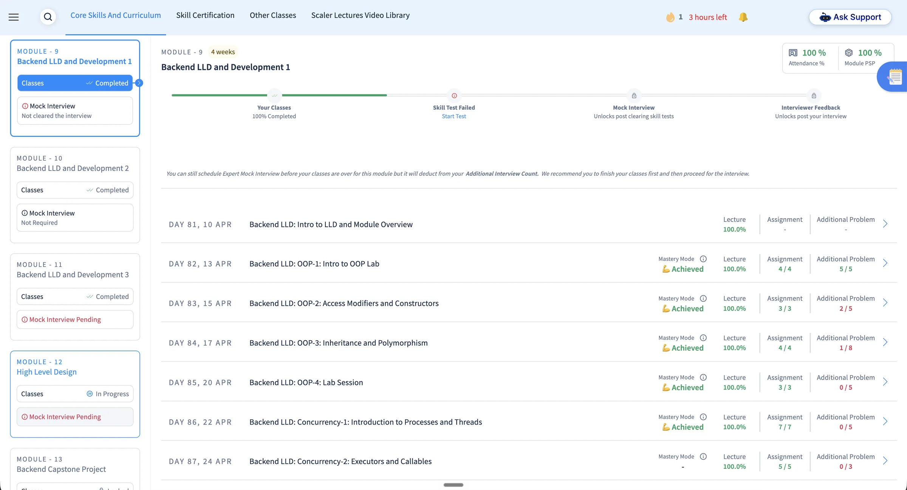
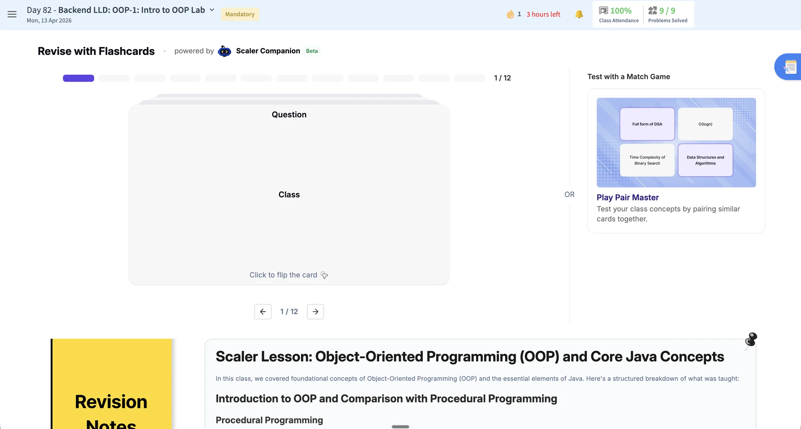
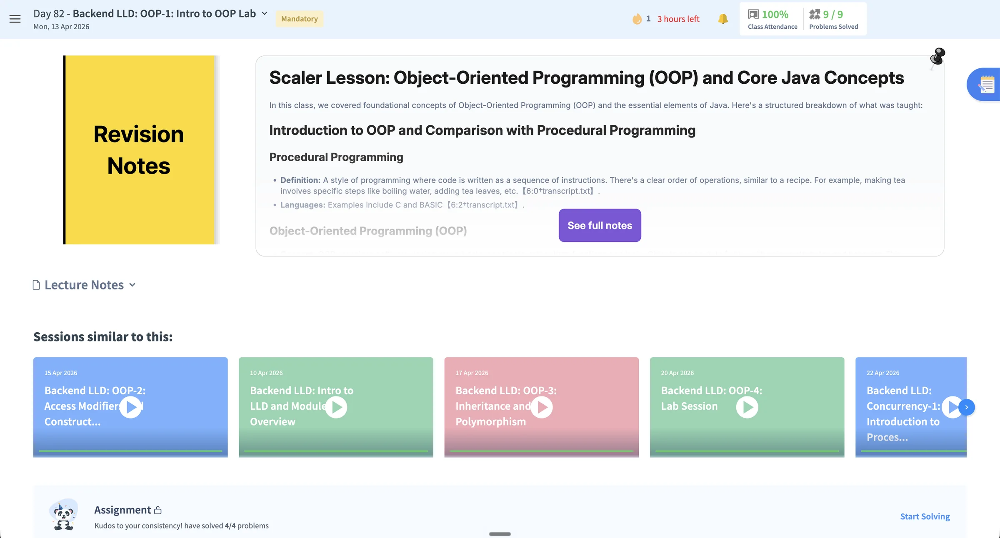
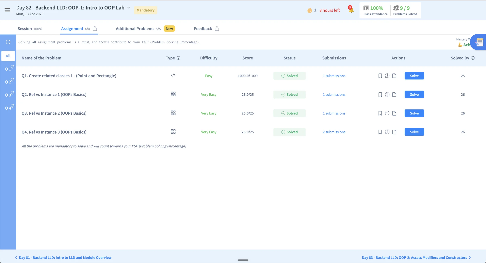
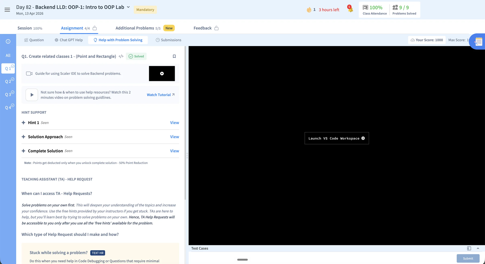
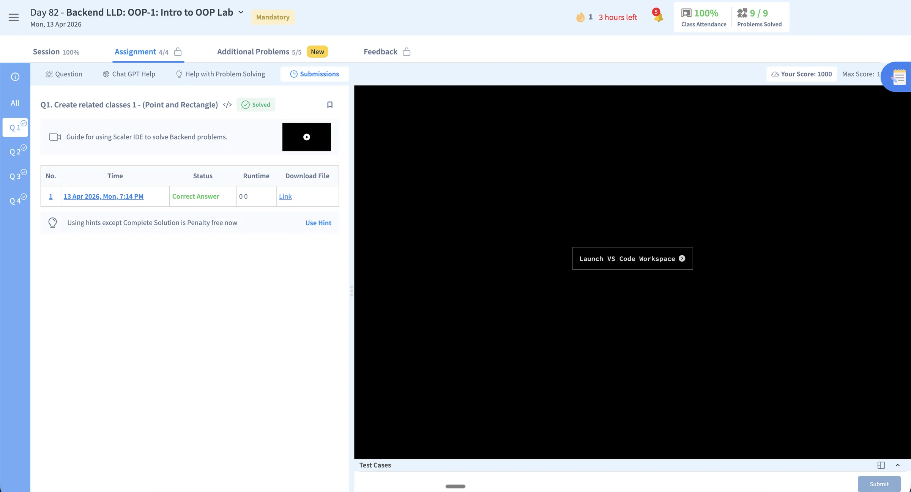
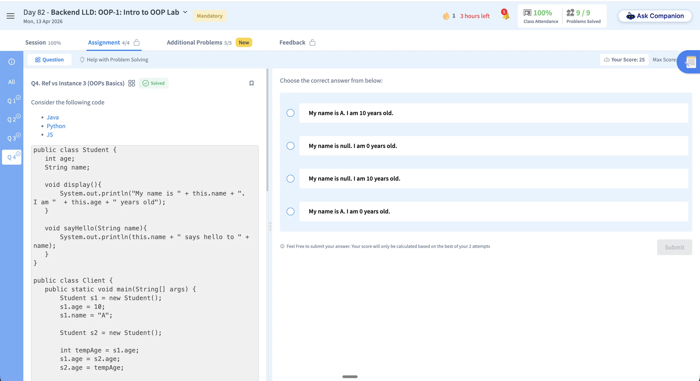

The product had no coherent surface for a personalised roadmap, recommendation rationale, adaptive enrichment, or a continuous Companion experience.
Scaler AI LMS · Product Design
59.3% of the first cohort activated the new LMS, creating a clear opportunity for a guided learning journey.
Across the first launch cohort, 134 of 226 learners enabled the new LMS. The redesign channelled that early adoption across Path-maker, Inside Class, and Problem Solving into one connected experience, giving learners a clearer next action at every stage.
Product Design
Interaction, flows, states and brand application
2026
Prachi · Lead Product Designer
Path-maker and IDE experience
Kishan · Principal Product Designer
Inside Class experience


134 / 226
paid learners enabled the new LMS
100–155
daily unique visits after the mid-July step-up
30.2%
reached Core Curriculum within seven days
16.7%
reached All Problems to continue practising
The product experience no longer reflected the curriculum.
Calendar events, contests, and practice activities appeared as separate modules, with no system-level prioritisation or sequence.
Locks, pending statuses, PSP percentages, and leaderboards show learners what remains incomplete, but not what to prioritise next or why it matters.
Why redesign
The core AI capabilities lacked a coherent product surface. Personalisation, adaptive enrichment, and the Companion appeared as disconnected features, resulting in a generic experience that did not reflect the intended curriculum model.
The home dashboard did not make the next action clear.
Before
A feature-led dashboard without a clear next action
The existing home combines a Calendar, a Contest promotion, an Explore Scaler row, Actions Pending, a Practice module, a full-width Refer ₹12,000 banner, and a right rail of Performance metrics and peer job-offer updates. These modules are presented as independent destinations, requiring learners to interpret them and construct a plan for themselves.
- 01No clear priority or next action
Calendar, Contest, Actions Pending, and Practice compete for attention without a time-aware hierarchy.
- 02Feature-led rather than journey-led
Dated items and product modules are not sequenced into a coherent learning path.
- 03Promotional content competes with learning
Repeated Refer & Earn, MS Degree, OPGP, and Pause or Reset messages interrupt the primary learning workflow.
- 04Progress is framed through comparison
Rank, PSP percentage, and deficit-based prompts describe performance without translating it into actionable guidance.
- 05The interface cannot represent the AI-native curriculum
Personalised recommendations, rationale, adaptive enrichment, and continuous Companion support have no coherent place in the information architecture.


Screen diagnosis
Seven usability costs, organised into three themes.
Priority and focus
01Competing priorities
Calendar, contests, pending actions, practice, promotions and performance data compete equally. No single action is identified as most important now.
02Learning competes with promotion
Explore Scaler, MS Degree and referral messages repeatedly interrupt the primary learning workflow.
03Status without guidance
Rank, attendance and problem-solving progress describe performance without connecting it to an action in today's plan.
Journey continuity
04Features do not form a journey
The information architecture mirrors separate product modules, leaving learners to connect class, feedback, practice and progress themselves.
05Context resets while scrolling
Moving between Calendar, Explore Scaler, Actions Pending and Practice requires repeated scanning and reorientation.
System clarity
06States lack explanation
Locks and labels such as "AI Infused Learning 3/4/5" do not explain cause, availability, or the next action.
07Personalisation is not legible
Static calendar entries do not reveal recommendation rationale, cohort versus enrichment, or continuous Companion guidance.
The class experience was fragmented across disconnected activities.
Before
A recording-led experience fragmented across tabs
The existing class experience sits within a Core Skills and Curriculum ledger. Modules 11–15 are presented in a rail with locked and Mock Interview Pending states, while each module opens into a day-by-day table of completion percentages. At class level, Watch Recording is the primary action. Flashcards, a Match Game, and Revision Notes appear as separate supplementary features rather than parts of a connected learning sequence.
- 01No preparation-to-revision journey
Modules, class tabs, recording, flashcards, games, notes, and assignments are presented as separate destinations rather than one connected class sequence.
- 02Completion metrics replace journey guidance
Percentages and task counts report status without clarifying what the learner should do before, during, or after class.
- 03The recording becomes the primary experience
Watch Recording dominates the class page, while preparation and follow-up activities have no clear sequence.
- 04AI-supported activities remain fragmented
AI interview practice, Companion flashcards, the Match Game, and revision notes appear as separate tools instead of one support layer.




Screen diagnosis
Seven usability costs, organised into three themes.
Journey guidance
01No preparation path
The experience begins with the session or recording and provides no structured pre-read or readiness step.
02Status replaces direction
Attendance, completion percentages, coins, and task counts report progress without identifying the next learning action.
03The recording anchors the experience
Watch Recording receives the strongest emphasis, framing the class as content consumption rather than a learning loop.
Fragmented learning
04Activities are separate destinations
Assignments, additional problems, flashcards, the Match Game, notes, and similar sessions are not sequenced into prepare, attend, practise, and revisit.
05The page requires repeated reorientation
Learners move across tabs and a long scroll, rebuilding context whenever they switch from the session to revision or practice.
System clarity
06Locks and pending states lack rationale
Mock Interview Pending, locked feedback, and unavailable tasks communicate restriction without a clear cause or recovery path.
07AI support has no continuous role
AI interview practice and Companion-powered activities appear as isolated features instead of one persistent guidance layer.
The solving workflow separated problem context, coding, and support.
Before
A solving experience split across lists, tabs, and an external editor
The existing assignment begins in a table of problems with type, difficulty, score, status, submissions, actions, and peer completion. Opening a coding problem moves the learner into a split workspace where Question, Chat GPT Help, Help with Problem Solving, and Submissions are separate tabs, while implementation begins behind Launch VS Code Workspace. Multiple-choice questions use another interaction model. The learner must repeatedly move among problem context, coding, support, and results.
- 01The entry point is reporting-led
Scores, solved states, submission counts, actions, and peer completion dominate before the learner understands the purpose of each problem.
- 02Context and implementation are separated
The statement remains inside the learning platform while coding begins through a separate VS Code workspace.
- 03Support is split across competing paths
Chat GPT Help, hints, solution approaches, complete solutions, tutorials, and TA requests do not form one progressive help model.
- 04The attempt has no continuous feedback loop
Submission records and answer states sit apart from the learner's reasoning, errors, support history, and next attempt.





Screen diagnosis
Seven usability costs, organised into three themes.
Entry and orientation
01Status appears before learning intent
The page explains that every problem contributes to PSP, but not why a learner should choose one or what capability it is intended to build.
02Navigation is duplicated
The Q1 to Q4 rail and the assignment table both represent the same problem set, creating two competing ways to orient within it.
03Completion lacks a learning signal
Solved, score, submission count, and Solved By describe outcomes without revealing misconceptions, confidence, or the next skill gap.
Context continuity
04The question and editor are separated
The learner reads the statement in the platform, then launches a separate VS Code workspace to implement and test the solution.
05Tabs reset the task context
Question, help, and submissions occupy mutually exclusive views, so the learner cannot keep the problem, guidance, and attempt history visible together.
Support and feedback
06Help has multiple competing models
Chat GPT Help, Use Hint, Solution Approach, Complete Solution, tutorials, and TA requests require the learner to choose a support system before receiving guidance.
07Feedback is detached from the attempt
The submission table records an answer and runtime, but does not connect the result to errors, guidance used, or a recommended next attempt.
One learning strategy connects all three product surfaces.
Path-maker, Inside Class, and Problem Solving address different moments in the learner journey, but follow the same principle: make the next action clear, provide the context needed to act, and keep guidance inside the workflow.
Sequence fixed commitments and adaptive support into a time-aware weekly plan.
Bring preparation, live learning, practice, and revision into one continuous journey.
Keep problem context, examples, progressive help, and Companion support inside the solving flow.
Shared delivery method
Validate the interaction, align the narrative, and hand off both design and behaviour.
Use Claude to map interaction logic, learner states, and edge cases in a working browser prototype.
Review the HTML with stakeholders and approve the ideation, interaction direction, and narrative.
Translate the approved flows into production-ready screens using the Syntax by Scaler design system.
Package final screens, states, component behaviour, and design-system usage for the engineering handoff.
Give engineering the approved HTML prototype alongside Figma so interactions and state changes remain clear during implementation.
From mapping the complete journey to clarifying the next action.
Path-maker translates curriculum state into a time-aware plan—helping learners understand what needs attention now, what comes next, and what will unlock later.
Journey model
Map the journey before simplifying the home
I built an internal journey model spanning onboarding, eight learning modules, and career preparation. Across 14 visible states, it helped validate sequencing, dependencies, and how activities move from locked to upcoming, current, and complete.
Sequence the system
Connect the curriculum rhythm with onboarding dependencies.
Cover meaningful states
Design completed, current, upcoming, and locked activities together.
Design decisions
Turn system complexity into one clear priority
The home should interpret the curriculum—not ask learners to decode it.
01
Complete journey
Current week
Focus attention
02
Curriculum status
One clear action
Reduce interpretation
03
Generic activity row
Context-rich task
Support decisions
04
Hidden dependency
Explained unlock
Set expectations
Final design prototype
A Weekly Plan that advances with the learner
The final home organises activities by date, priority, and availability. A live Now marker and To-Dos for Today establish the immediate priority, while future activities preserve awareness of the wider journey without competing for attention.
The same structure connects learning with operational onboarding tasks, including the manager call, batch allocation, mentor selection, and Meet n Greet. Task cards provide the topic, activity type, instructor, duration, status, explanation, and next action without requiring the learner to open another page for context.

Default weekly plan
Default and scrolled states keep today's priorities anchored as the learner moves through the plan.


State-aware planning
Empty-schedule and paused-course states keep the roadmap informative when the expected weekly rhythm changes.


Companion in context
Companion opens beside the plan with suggested prompts, then carries the conversation without taking the learner out of the current task.


Mock-interview urgency
Upcoming and expired states change the message and action while preserving the interview's place in the weekly plan.
Interaction proof
Make the consequence of each action visible
The working prototype demonstrates how the plan responds as the learner progresses. Completing one activity updates the journey and reveals the next relevant action, turning progress into something the learner can immediately understand.
Personalise onboarding
Selecting and saving a batch preference returns the learner to the active plan with their choice acknowledged.
Advance the task sequence
Completing the active live session marks it Done and activates the assignment that follows.
Explain future access
Locked modules and the Careers Hub remain visible with the condition required to unlock them.
Guide in context
Iris Companion reinforces the current action without replacing the plan's primary hierarchy.
The final prototype shifts Path-maker from a dashboard learners must interpret into a planning surface that interprets the curriculum for them.
Turn every class into one connected learning loop.
Inside Class connects preparation, attendance, practice, and revision around the same session.
Design logic
One class loop, four connected moments
I organised every session around a simple sequence: prepare, attend, practise, and revisit.
- 01Prepare
- 02Attend
- 03Practise
- 04Revisit
Persistent context
Keep the full journey visible
A Class Rail keeps Pre-read, Live Class, Assignments, and Practice in view. Locked states explain what opens next.
Active preparation
Teach through examples and action
Familiar examples introduce each concept before short exercises let learners test it. Companion stays available in the same flow.
Final design prototype
Carry context from preparation into revision
Pre-read, assignment details, the class lobby, and the live session stay inside one Class Rail. Each state makes the current task, progress, and next action immediately visible.
After class, the recording, chapters, transcript highlights, personal notes, lecture notes, quizzes, and flashcards remain connected to the session.


Preparation and application
The pre-read moves from explanation to practice; assignment details carry the same context into solution review.


Live-class readiness
The lobby preserves the outcomes and agenda while the primary action changes from countdown to Join Live Class.


Recording and revision
Video, transcript, highlights, notes, quizzes, and flashcards form one revision surface anchored to the class.
Integrate problem context, coding, and guided support in one workspace.
Approach
Support learners through moments of difficulty
The design keeps the problem, editor, test cases, submissions, and Companion inside one timed workspace. Guidance escalates from contextual hints to solution reveal, while each result explains what happened and what to try next.
Ideate
Balance productive effort with progressive support
The prototype introduced two deliberate forms of friction:
Preserve productive friction
Hints reduce the available score, while revealing the complete solution sets the score to zero. This encourages an independent attempt before the answer is disclosed.
Escalate support progressively
Companion hints and saved conversation history lead to TA support by text or video after meaningful attempts, creating one continuous assistance path.
Final design prototype
Keep every attempt inside one focused workspace
The All Problem Space brings assignments, contests, and mock interviews into one searchable entry point. From there, the problem, code, test cases, and navigation stay visible in both light and dark themes.
Submission history distinguishes Accepted, Wrong Answer, Time Limit, and Compile Error. The solution remains locked behind a Companion-first prompt, making the cost of revealing it explicit.


All Problem Space
All assignments and contests are listed in one searchable space, with status and the next action visible before learners begin.


Focused workspace
Problem context, editor, test cases, and navigation share one timed workspace in both themes.

In-context assistance
Companion explains a failed test beside the code, so learners can act without leaving the attempt.


Submission feedback
Accepted and failed attempts sit beside the code, connecting outcome, runtime, and recovery to the work.


Progressive solution access
Solution reveal follows guided help and clearly communicates the score trade-off before disclosure.
Outcome
The new LMS established early adoption—and revealed where learners wanted to go next.
The redesign made next steps clearer across curriculum, practice, career growth, and learning resources. The strongest signal was not traffic alone, but the high-value journeys learners chose after entering the new experience.
Where learners chose to go next
Average daily unique clicks across the most-used primary navigation destinations.
Roadmap58.9
Career Curriculum & Mentorship25.2
Lecture Library20.8
Careers Hub17.7
Introduce the redesign in the sequence learners experience it.
The redesign spans the full learner journey and replaces familiar workflows. Releasing every surface simultaneously would increase cognitive load and adoption risk. The rollout therefore introduces one new surface at a time, allowing learners to build familiarity before the next change.
The release sequence follows the learner's progression through the product:
The primary entry point establishes the new planning model and creates a consistent foundation for the surfaces that follow.
The second phase extends the model into the recurring preparation, attendance, practice, and revision loop.
The most specialised surface is introduced after learners are familiar with the broader interaction model.
The case study follows the same sequence.
A phased release reduces adoption risk by allowing each new interaction model to become familiar before the next is introduced.
Five principles from designing platform-level change.
A static dashboard could not represent a personalised, adaptive curriculum. Information architecture must provide a coherent place for the capabilities that define the learning experience.
Introducing one unfamiliar surface at a time gives learners a stable reference point and reduces the cognitive load of platform-level change.
Making all 16 personas and every empty, locked, and error state switchable brought edge cases into design review while they were still inexpensive to resolve.
Static screens support visual review; working prototypes allow stakeholders to assess sequence, state transitions, and interaction logic before approving a direction.
HTML enabled rapid behavioural validation, while Figma provided the precision required for final specification and engineering handoff.